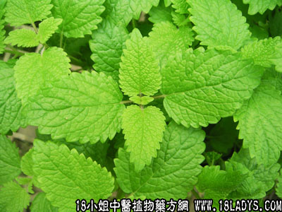

柠檬叶(中药材植物名:柠檬)(植物科目:芸香科)

植物名：柠檬。
生长环境：本品为灌木。华南地区常见，尤其在柑桔栽培区，在田野或路旁、堤岸旁栽培。
分布：我国南部各省，亚洲热带地区亦有。
入药部分：叶。
采集期：全年。
自采地点：家种。
性味：性微温、味甘淡、气香。
功能：止咳、行气。
主治、用量和用法：治风寒咳嗽：生叶或干叶3～5钱清水煎服。
附录：（根）治咳嗽、胃痛、疝气：干用5钱至1两，清水煎服。
参考资料：《广东中医》（1960.4）介绍：“桉凤柠散”治疗160例腹泻，处方及制方：桉树叶粉5克、凤尾草粉3克、柠檬叶粉2克，混合，分为5包，为一日量。首次先服2包，以后每隔3小时服1包，开水送下，小儿酌减。可加白糖或蜂蜜，如果连服数日，第二日改为每次3包，疗效显著，大部分患者只投服1剂，即先病除。
有一种西柠檬味苦，性似柠檬，芳香性更大；浸酒或煎服治胃痛、疝气。又一种名“番柠檬叶”，为栽培植物，治风寒咳嗽甚效，均为本品不同。